El ESP32 es una serie de microcontroladores System on a Chip (SoC) de bajo costo y bajo consumo, desarrollados por Espressif, con un procesador agil utilizado ampliamente en programacion IoT, electronica y robotica.
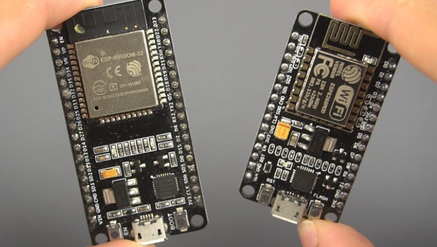
Las partes físicas principales de la placa son: la antena que va integrada al chip, el módulo ESP-WROOM-32 el microcontrolador en sí, el chip CP2102 que convierte USB a serial para que la PC se comunique con la placa, el regulador de voltaje, el botón RESET/EN que reinicia la placa, la entrada USB para alimentación y programación y el botón BOOT para entrar en modo de carga de firmware.
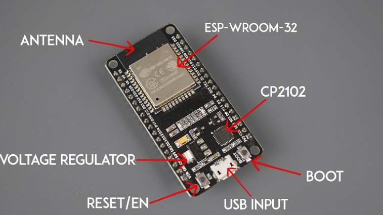
Los pines del ESP32 permiten conectar la placa con diferentes componentes electrónicos, como sensores, LEDs, botones, pantallas, módulos de comunicación y actuadores. A través de estos pines, el microcontrolador puede recibir información del entorno, procesarla y generar una respuesta.
No todos los pines cumplen la misma función. Algunos pueden utilizarse como entradas o salidas digitales, mientras que otros permiten leer señales analógicas, establecer comunicación con otros dispositivos o suministrar alimentación.
Antes de realizar una conexión es importante identificar correctamente la función de cada pin, ya que algunos poseen características o restricciones especiales. En este laboratorio se utilizará una placa ESP32-WROOM-32 de 38 pines, por lo que el siguiente mapa servirá como referencia durante las actividades.
El siguiente diagrama muestra la distribución de pines de una placa ESP32-WROOM-32 de 38 pines:
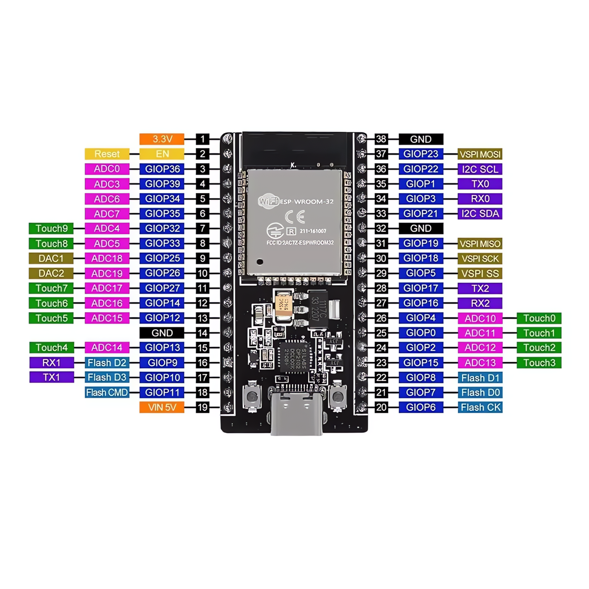
| Tipo de pin | Función principal | Ejemplos |
|---|---|---|
| Alimentación | Alimentar la placa o componentes externos | 3.3V, VIN/5V, GND |
| GPIO | Entradas y salidas digitales de propósito general | GPIO2, GPIO4, GPIO18, GPIO23... |
| ADC | Lectura de señales analógicas | GPIO32, GPIO33, GPIO34... |
| DAC | Generación de señales analógicas | GPIO25, GPIO26 |
| Touch | Detección táctil capacitiva | T0 - T9 |
| I²C | Comunicación con sensores y otros periféricos | SDA, SCL |
| SPI | Comunicación de alta velocidad con periféricos | MOSI, MISO, SCK, SS |
| UART | Comunicación serial | TX, RX |
Primero abre Arduino IDE, luego dirígete al apartado File luego a Preferences
File → Preferences
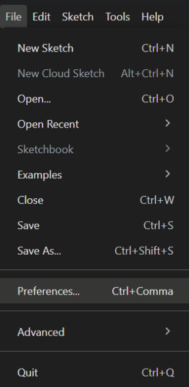
En el campo “Additional boards manager URLs” o “Gestor de URLs Adicionales de Tarjetas”, ingresar la siguiente dirección para trabajar con la placa ESP32:
https://raw.githubusercontent.com/espressif/arduino-esp32/gh-pages/package_esp32_index.json
Pegar la URL y presionar OK
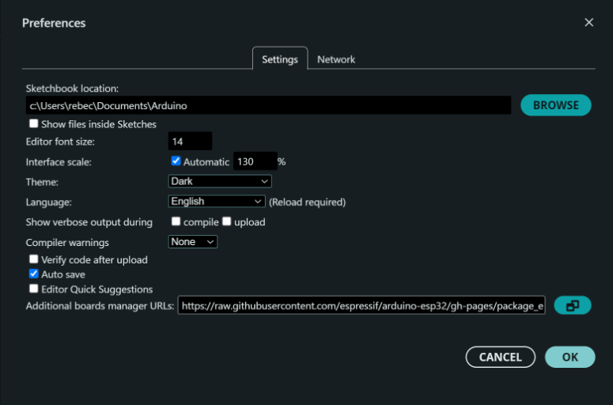
Si en dado caso trabajamos con la placa ESP8266 podemos colocar ambas URLs en el mismo campo, separadas por una coma:
https://raw.githubusercontent.com/espressif/arduino-esp32/gh-pages/package_esp32_index.json,
http://arduino.esp8266.com/stable/package_esp8266com_index.json
Y luego damos click en el botón de OK
Ve a Tools luego a Board, en el apartado de Boards Manager, busca ESP32 en el cuadro de búsqueda.
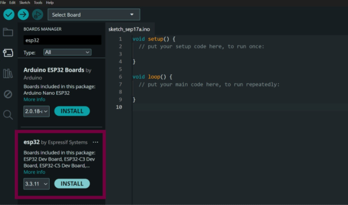
Haz clic en INSTALL sobre el paquete "esp32 by Espressif Systems". La descarga puede tardar varios minutos: no cierres el IDE mientras avanza. Para confirmar que quedó instalado, cambia el filtro "Type" a "Installed": debe aparecer "esp32 by Espressif Systems" con la etiqueta installed.
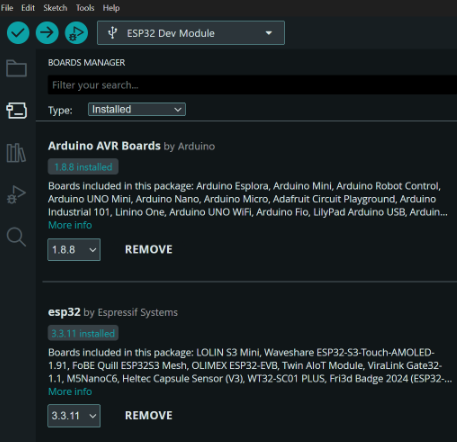
Cada placa ESP32 se comunica con el computador a través de un pequeño chip USB-a-serial. El driver que debes instalar depende de cuál chip trae tu placa. Antes de conectar nada, identifica el tuyo
Para verificar el driver necesario para nuestra ESP32, la conectamos con el cable USB y abrimos el Administrador de dispositivos de Windows
Windows + X
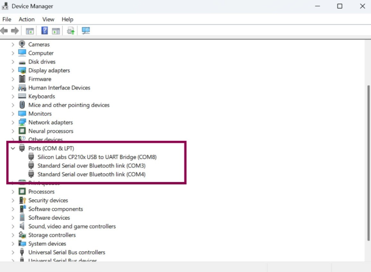
Si la placa utiliza CP2102/CP210x, debemos instalar el controlador correspondiente de Silicon Labs.
Ingresamos a: https://www.silabs.com/software-and-tools/usb-to-uart-bridge-vcp-drivers?tab=downloads
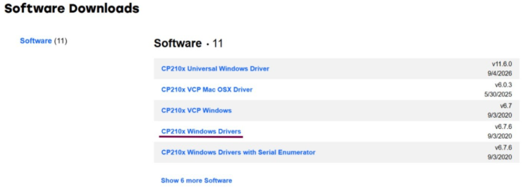
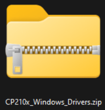
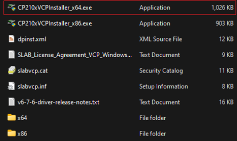
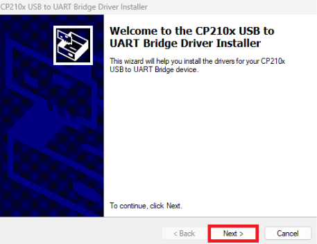
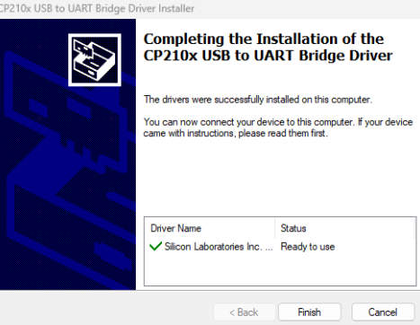
Para el Chip CH340 / CH341 (WCH)
Descarga el driver oficial desde el sitio del fabricante:
https://www.wch-ic.com/downloads/CH341SER_EXE.html
Ejecuta el instalador descargado, haz clic en "Install" (si ya existe una versión anterior, primero en "Uninstall" y luego "Install") y reconecta la placa al terminar.
Nota para usuarios de macOS y Linux: El proceso es muy similar: en la misma página del fabricante encontrarás la versión para tu sistema operativo.
Seleccionamos la placa y el puerto en el Arduino IDE. En tools seleccionamos board y buscamos el modelo de la placa
Y luego siempre en tools ve a port y selecciona el puerto COM.
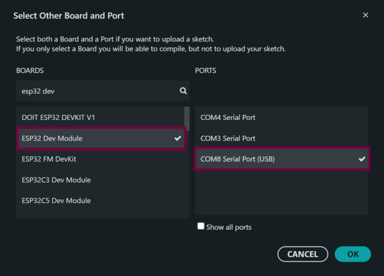
Si el sketch se sube sin errores en la consola inferior, y el LED de la placa comienza a parpadear, ¡la instalación quedó lista!
Así se ve una subida exitosa en la pestaña "Output" de Arduino IDE: la barra de progreso llega a 100%, los datos se verifican y termina con "Hash of data verified".
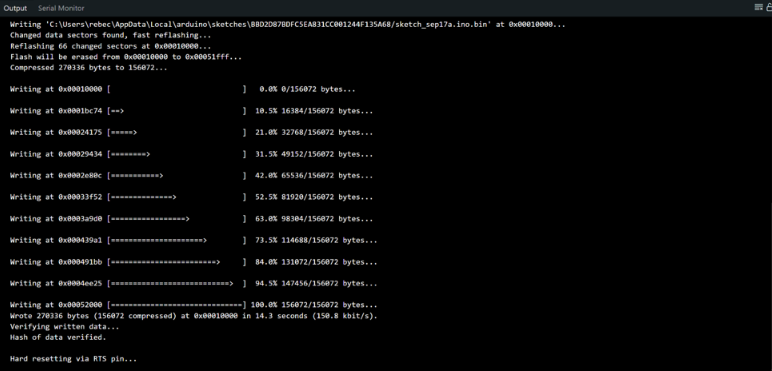
Antes de comenzar a trabajar con sensores y otros componentes, se realizará una prueba básica para verificar que el ESP32 puede ser programado correctamente y que existe comunicación entre la placa y la computadora.
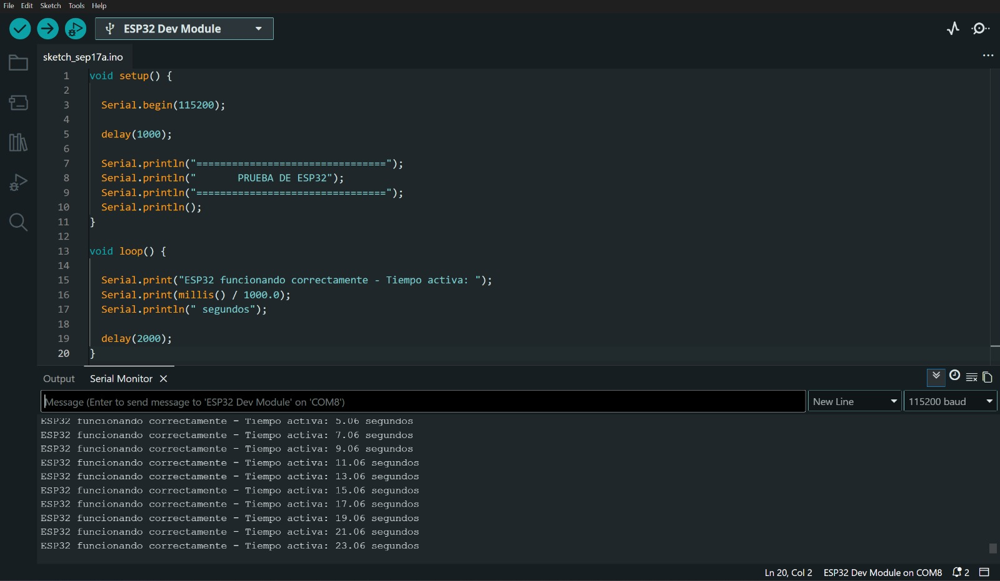
Si la configuración es correcta, el Monitor Serial mostrará periódicamente un mensaje indicando que el ESP32 está funcionando, junto con el tiempo transcurrido desde el inicio del programa.
En esta actividad se utilizará uno de los sensores táctiles capacitivos integrados en el ESP32. Primero se observarán los valores obtenidos por el pin Touch para determinar cuándo existe contacto. Posteriormente, esta lectura se utilizará para modificar el contenido mostrado en una pantalla OLED.
Al finalizar, la pantalla deberá mostrar un estado de espera mientras el sensor no sea tocado. Cuando se detecte contacto, el mensaje deberá cambiar y un círculo deberá desplazarse hacia el lado opuesto de la pantalla.
Realice las siguientes conexiones entre el ESP32, la pantalla OLED y el punto de contacto táctil.
| Componente | ESP32 |
|---|---|
| OLED VCC | 3.3V |
| OLED GND | GND |
| OLED SDA | GPIO21 |
| OLED SCL | GPIO22 |
| Touch | GPIO4 (T0) |
Para el sensor Touch, conecte un cable al GPIO4 y deje accesible el extremo metálico del cable. Este extremo será la superficie que deberá tocarse durante la prueba.
Antes de utilizar la pantalla OLED, observe el comportamiento del sensor táctil. Complete las instrucciones faltantes del siguiente programa y cárguelo al ESP32.
const int TOUCH_PIN = ;
void setup() {
Serial.begin(115200);
delay(1000);
Serial.println("PRUEBA SENSOR TOUCH");
Serial.println();
}
void loop() {
int valorTouch = _______________________;
Serial.print("Valor Touch: ");
_______________________;
delay(200);
}Abra el Monitor Serial a 115200 baudios y observe los valores mostrados primero sin tocar el cable y posteriormente mientras lo toca.
| Medición | Valor aproximado |
|---|---|
| Sin tocar | ________________________ |
| Al tocar | ________________________ |
| Umbral seleccionado | ________________________ |
Utilice ahora el valor de umbral obtenido en la prueba anterior para completar el siguiente programa. El sistema deberá distinguir entre los estados de espera y contacto utilizando el valor leído en el GPIO4.
Cuando no exista contacto, la OLED deberá mostrar “Esperando...” y un círculo en el lado izquierdo. Cuando se detecte un toque, deberá mostrar “Toque detectado!” y mover el círculo hacia el lado derecho.
#include <Wire.h>
#include <Adafruit_GFX.h>
#include <Adafruit_SH110X.h>
#define SCREEN_WIDTH 128
#define SCREEN_HEIGHT 64
#define OLED_RESET -1
#define OLED_ADDRESS 0x3C
Adafruit_SH1106G display(
SCREEN_WIDTH,
SCREEN_HEIGHT,
&Wire,
OLED_RESET
);
const int TOUCH_PIN = ;
const int UMBRAL_TOUCH = ______;
void setup() {
Serial.begin(115200);
Wire.begin(21, 22);
if (!display.begin(OLED_ADDRESS, true)) {
Serial.println("Error al iniciar la pantalla OLED");
while (1);
}
display.clearDisplay();
display.setTextColor(SH110X_WHITE);
}
void loop() {
int valorTouch = _______________________;
display.clearDisplay();
display.setTextSize(1);
display.setCursor(26, 5);
display.println("ESP32 TOUCH");
if (_______________________) {
display.setCursor(15, 28);
display.println("_______________________");
display.fillCircle(105, 52, 5, SH110X_WHITE);
}
else {
display.setCursor(32, 28);
display.println("_______________________");
display.fillCircle(20, 52, 5, SH110X_WHITE);
}
display.display();
delay(100);
}Pruebe el funcionamiento varias veces tocando y soltando el extremo conectado al GPIO4. El cambio mostrado en la OLED deberá producirse únicamente cuando el sensor detecte contacto.
Modifique el programa anterior para incorporar un segundo punto táctil que funcione como un segundo botón.
El programa deberá identificar cuál de los dos sensores fue tocado y mostrar en la pantalla OLED un mensaje diferente para cada uno.
Entrar a la página oficial de Adafruit, presionar en iniciar sesión.
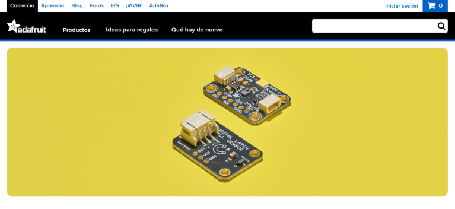
Los dirigirá a la siguiente pantalla, si ya tiene una cuenta solo colocar sus datos, sino, presionar en el apartado de: crear una cuenta de Adatruit.
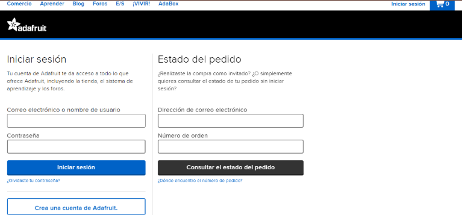
Deberán completar los siguientes apartados con sus datos.
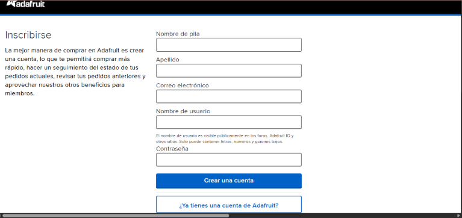
Al finalizar todo, deberán ver una pantalla con su nombre en la parte superior derecha.
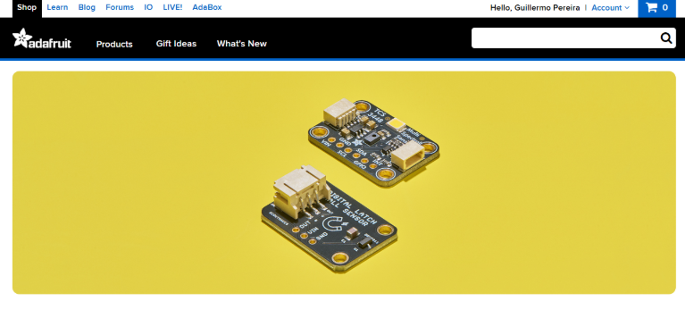
Seleccionar Input/Output (IO), lo más importante está en: Feeds y Dashboards
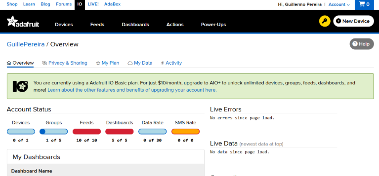
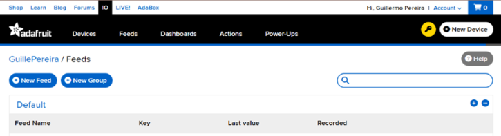
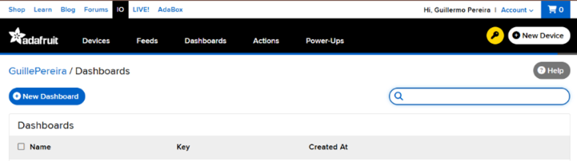
La Adafruit IO Key (AIO Key) es una clave de autenticación que permite que tu dispositivo (por ejemplo, una placa ESP32 o ESP8266) se conecte a tu cuenta de Adafruit IO para enviar y recibir datos.
La AIO Key es secreta, no debe de ser compartida.
Al finalizar el laboratorio, deberá entregar las siguientes evidencias: